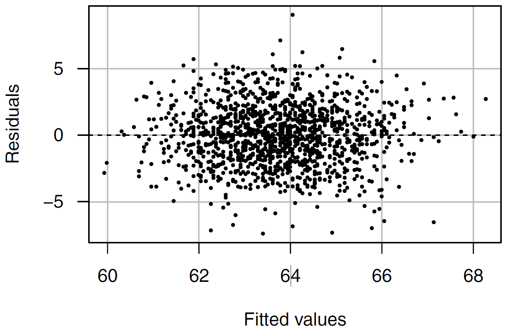
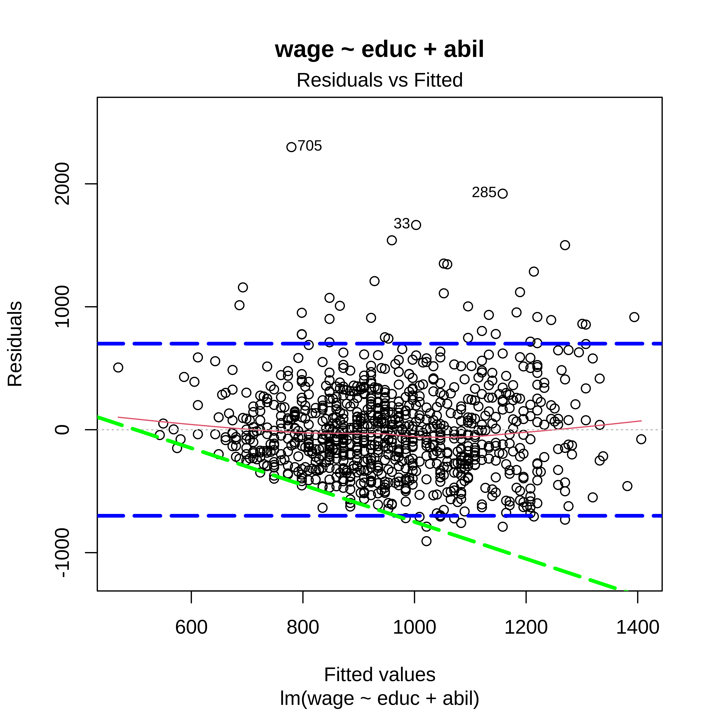
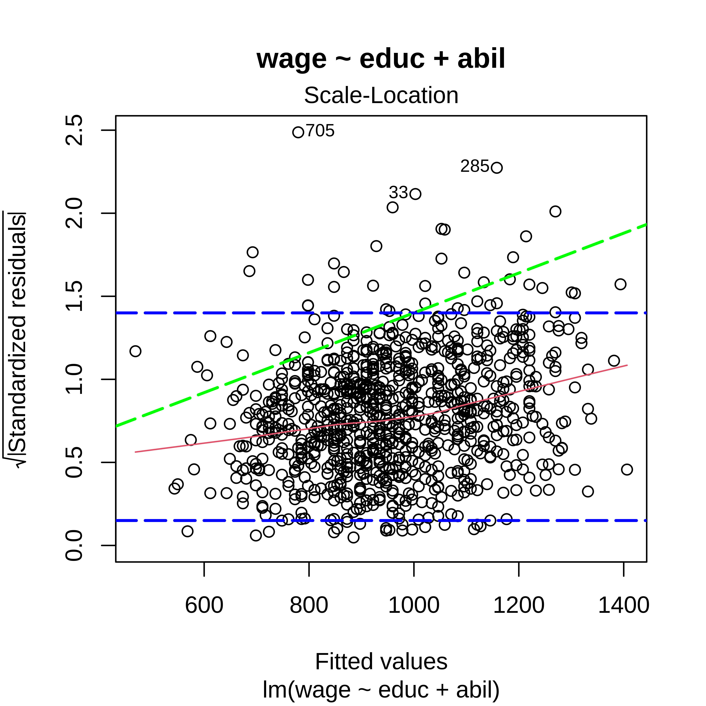

library(tidyverse) # for data wrangling
library(alr4) # for the data sets #
library(GGally)
library(ggpmisc)
library(parameters)
library(performance)
library(see)
library(car)
library(broom)
library(modelsummary)
library(texreg)
library(report)
library(wooldridge)
ggplot2::theme_set(ggplot2::theme_bw())
knitr::opts_chunk$set(
fig.width = 12,
fig.asp = 0.618,
fig.retina = 3,
dpi = 300,
out.width = "100%",
message = FALSE,
echo = TRUE,
cache = TRUE
)
arrange_diagnostics <-
function(fit_obj_list,
...,
which = c(1, 3),
cols = NULL) {
if (class(fit_obj_list) == "lm") fit_obj_list <- list(fit_obj_list)
if (length(rlang::dots_list(...)) > 0) fit_obj_list <- fit_obj_list %>% append(rlang::dots_list(...))
if (is.null(cols)) cols = ceiling(length(fit_obj_list) * length(which) / 2)
rows = ceiling(length(fit_obj_list) * length(which) / cols)
if (length(which) > 1) {
par(mfcol = c(rows, cols))
} else {
par(mfrow = c(rows, cols))
}
fit_obj_list %>%
walk(~ {
fitt <- .x
which %>%
walk(~ {
plot(fitt, which = .x, main = as.character(fitt$call)[2])
})
})
par(mfrow = c(1, 1))
}
my_gof <- function(fit_obj, digits = 4) {
sum_fit <- summary(fit_obj)
stars <-
pf(sum_fit$fstatistic[1],
sum_fit$fstatistic[2],
sum_fit$fstatistic[3],
lower.tail=FALSE) %>%
symnum(corr = FALSE, na = FALSE,
cutpoints = c(0, .001,.01,.05, 1),
symbols = c("***","**","*"," ")) %>%
as.character()
list(
# `R^2` = sum_fit$r.squared %>% round(digits),
# `Adj. R^2` = sum_fit$adj.r.squared %>% round(digits),
# `Num. obs.` = sum_fit$residuals %>% length(),
`Num. df` = sum_fit$df[[2]],
`F statistic` = str_c(sum_fit$fstatistic[1] %>% round(digits), " ", stars)
)
}
screen_many_regs <-
function(fit_obj_list, ..., digits = 4, single.row = TRUE) {
if (class(fit_obj_list) == "lm") fit_obj_list <- list(fit_obj_list)
if (length(rlang::dots_list(...)) > 0) fit_obj_list <- fit_obj_list %>% append(rlang::dots_list(...))
# browser()
fit_obj_list %>%
texreg::screenreg(
custom.note =
list(., seq_along(.), names(.)) %>%
pmap_chr(~ {
# browser()
# mod_nm <- str_c("Model ", ..2)
if (!is.null(..3) && ..3 != "") mod_nm <- ..3 else {
mod_nm <- str_c("Model ", ..2)
}
str_c(mod_nm, " ", as.character(..1$call)[[2]])
}) %>%
c("*** p < 0.001; ** p < 0.01; * p < 0.05", .) %>%
str_c(collapse = "\n") ,
digits = digits,
single.row = single.row,
custom.gof.rows =
map(., ~my_gof(.x, digits)) %>%
transpose() %>%
map(unlist),
reorder.gof = c(3, 4, 5, 1, 2)
)
}Heteroscedasticity
MP223 - Applied Econometrics Methods for the Social Sciences
Eduard Bukin
R setup
Assumption 5. Error Terms Homoscedasticity
\[Var(u|x_{i1}, x_{i2}, \cdots , x_{ik}) = \sigma^2\]
Causes of heteroscedasticity
Functional relationship is misspecified;
Omitting an important factor;
Nature of data generation process;
Consequence:
Estimates may not be biased, but;
Standard errors are inefficient;
Hypothesis testing on the coefficients may be False because under heteroskedasticity our estimates are inefficient;
Detection
graphical: residuals vs regressors and fitted values plots;
Formal statistical testing:
Breusch-Pagan heteroskedasticiy test;
White test;
Goldfeld-Quandt heteroskedasticity test;
Solutions:
Re specify the model;
Choose different regressors;
- attempt to correct SE with alternative estimation procedures - use the heteroskedasticity-consistent (robust) standard errors!
See also: “Assumption AMLR.5” in (Wooldridge 2020) ;
AMLR. 5. Heteroscedasticity examples (1/2)

AMLR. 5. Heteroscedasticity examples (2/2)

Example 1. Heteroscedasticity in the wage equation
Data
Code
Rows: 935
Columns: 4
$ wage <int> 769, 808, 825, 650, 562, 1400, 600, 1081, 1154, 1000, 930, 921,…
$ educ <int> 12, 18, 14, 12, 11, 16, 10, 18, 15, 12, 18, 14, 15, 16, 16, 10,…
$ tenure <int> 2, 16, 9, 7, 5, 2, 0, 14, 1, 16, 13, 11, 3, 2, 9, 2, 9, 10, 7, …
$ abil <int> 35, 41, 46, 32, 27, 43, 24, 50, 37, 44, 44, 45, 40, 24, 47, 37,…# A tibble: 4 × 11
Variable n_Obs Mean SD Median MAD Min Max Skewness Kurtosis
<chr> <int> <dbl> <dbl> <int> <dbl> <int> <int> <dbl> <dbl>
1 wage 935 958. 404. 905 369. 115 3078 1.20 2.72
2 educ 935 13.5 2.20 12 1.48 9 18 0.549 -0.735
3 tenure 935 7.23 5.08 7 5.93 0 22 0.433 -0.799
4 abil 935 35.7 7.64 37 7.41 12 56 -0.293 -0.317
# … with 1 more variable: percentage_Missing <dbl>The model
=========================
Model 1
-------------------------
(Intercept) -71.0911
(81.5735)
educ 43.4601 ***
(6.0189)
abil 12.4130 ***
(1.7308)
-------------------------
R^2 0.1537
Adj. R^2 0.1519
Num. obs. 935
Num. df 932
F statistic 84.6348 ***
=========================
*** p < 0.001; ** p < 0.01; * p < 0.05Visual diagnostics:

Residuals vs Fitted

Residuals vs Fitted

Residuals vs Fitted

Standardized residuals vs Fitted

(sqrt) Standardized residuals vs Fitted

(sqrt) Standardized residuals vs Fitted

Residuals vs Fitted + (sqrt) Standardized residuals


Residuals vs Fitted + (sqrt) Standardized residuals

Statistical tests
Warning: Heteroscedasticity (non-constant error variance) detected (p < .001).\(H_0\) error terms are homoscedastic.
\(H_1\) we have heteroscedastic error terms.
We reject \(H_0\) if p-value < 0.05 (at 5% significance level).
The Breusch-Pagan test
studentized Breusch-Pagan test
data: fit_1
BP = 18.002, df = 2, p-value = 0.0001233White test: a special case of the BP test
Goldfeld-Quandt test: Stable with non-normal data
Goldfeld-Quandt test
data: fit_1
GQ = 0.96373, df1 = 465, df2 = 464, p-value = 0.6547
alternative hypothesis: variance increases from segment 1 to 2Conclusions on Heteroskedasticity in the wage equation
We have:
Heteroskedasticity;
Inappropriate model specification;
Possible linearity assumption violation;
Solutions:
Model re-specification;
Correcting standard errors;
Model adjustment:
Code
=================================================================================
Model 1 Model 2 Model 3
---------------------------------------------------------------------------------
(Intercept) -71.0911 (81.5735) 5.7620 (0.0858) *** 5.6751 (0.0859) ***
educ 43.4601 (6.0189) *** 0.0436 (0.0063) *** 0.0471 (0.0063) ***
abil 12.4130 (1.7308) *** 0.0120 (0.0018) *** 0.0103 (0.0018) ***
tenure 0.0140 (0.0025) ***
---------------------------------------------------------------------------------
R^2 0.1537 0.1378 0.1652
Adj. R^2 0.1519 0.1359 0.1625
Num. obs. 935 935 935
Num. df 932 932 931
F statistic 84.6348 *** 74.4578 *** 61.4301 ***
=================================================================================
*** p < 0.001; ** p < 0.01; * p < 0.05
Model 1 wage ~ educ + abil
Model 2 log(wage) ~ educ + abil
Model 3 log(wage) ~ educ + abil + tenureLinearity + Heteroskedasticity (1/2)

Linearity + Heteroskedasticity (2/2)

Heteroskedasticity
Conclusions:
Parameter | Coefficient | SE | 95% CI | t(931) | p
---------------------------------------------------------------------
(Intercept) | 5.68 | 0.09 | [5.51, 5.84] | 66.09 | < .001
educ | 0.05 | 6.26e-03 | [0.03, 0.06] | 7.52 | < .001
abil | 0.01 | 1.82e-03 | [0.01, 0.01] | 5.68 | < .001
tenure | 0.01 | 2.52e-03 | [0.01, 0.02] | 5.54 | < .001Model fit_3 describes the data in the best way because:
- Reduces omitted variable bias;
- Resolves non-linearity;
- But it still suffers from the heteroskedasticity!!
Robust standard errors
Robust estimators for variance covariance matrix:
sandwich::vcovHC- heteroskedasticity consistentsandwich::vcovCL- clustered SEclubSandwich::vcovCR- clustered heteroskedasticity consistent SEsandwich::vcovHAC- heteroskedasticity and autocorrelation consistentEstimation methods:
HC3- optimal one as per Long & Ervin (2000)HC1- default inStata
Robust standard errors (1)
Old estimates:
t test of coefficients:
Estimate Std. Error t value Pr(>|t|)
(Intercept) 5.6750741 0.0858710 66.0884 < 2.2e-16 ***
educ 0.0470780 0.0062604 7.5199 1.288e-13 ***
abil 0.0103191 0.0018174 5.6781 1.820e-08 ***
tenure 0.0139630 0.0025226 5.5352 4.042e-08 ***
---
Signif. codes: 0 '***' 0.001 '**' 0.01 '*' 0.05 '.' 0.1 ' ' 1Robust standard errors (1)
Robust estimates:
Code
t test of coefficients:
Estimate Std. Error t value Pr(>|t|)
(Intercept) 5.6750741 0.0848077 66.9169 < 2.2e-16 ***
educ 0.0470780 0.0067209 7.0047 4.740e-12 ***
abil 0.0103191 0.0019766 5.2205 2.201e-07 ***
tenure 0.0139630 0.0026470 5.2751 1.651e-07 ***
---
Signif. codes: 0 '***' 0.001 '**' 0.01 '*' 0.05 '.' 0.1 ' ' 1Robust standard errors (2)
t test of coefficients:
Estimate Std. Error t value Pr(>|t|)
(Intercept) 5.6750741 0.0848077 66.9169 < 2.2e-16 ***
educ 0.0470780 0.0067209 7.0047 4.740e-12 ***
abil 0.0103191 0.0019766 5.2205 2.201e-07 ***
tenure 0.0139630 0.0026470 5.2751 1.651e-07 ***
---
Signif. codes: 0 '***' 0.001 '**' 0.01 '*' 0.05 '.' 0.1 ' ' 1
t test of coefficients:
Estimate Std. Error t value Pr(>|t|)
(Intercept) 5.6750741 0.0845112 67.1517 < 2.2e-16 ***
educ 0.0470780 0.0066968 7.0299 3.994e-12 ***
abil 0.0103191 0.0019690 5.2407 1.979e-07 ***
tenure 0.0139630 0.0026387 5.2917 1.512e-07 ***
---
Signif. codes: 0 '***' 0.001 '**' 0.01 '*' 0.05 '.' 0.1 ' ' 1Robust standard errors (3)
For more details on the robust estimator
type
vignette("sandwich")in R consolesee: https://cran.r-project.org/web/packages/sandwich/vignettes/sandwich.pdf
Comparing Robust standard errors
=============================================================================
fit_2 - Regular fit_2 - Robust fit_3 - Regular fit_3 - Robust
-----------------------------------------------------------------------------
(Intercept) 5.76198 *** 5.76198 *** 5.67507 *** 5.67507 ***
(0.08576) (0.08332) (0.08587) (0.08481)
educ 0.04362 *** 0.04362 *** 0.04708 *** 0.04708 ***
(0.00633) (0.00668) (0.00626) (0.00672)
abil 0.01202 *** 0.01202 *** 0.01032 *** 0.01032 ***
(0.00182) (0.00193) (0.00182) (0.00198)
tenure 0.01396 *** 0.01396 ***
(0.00252) (0.00265)
-----------------------------------------------------------------------------
R^2 0.13777 0.13777 0.16524 0.16524
Adj. R^2 0.13592 0.13592 0.16255 0.16255
Num. obs. 935 935 935 935
=============================================================================
*** p < 0.001; ** p < 0.01; * p < 0.05Interpretation
Call:
lm(formula = log(wage) ~ educ + abil + tenure, data = woolwage2)
Coefficients:
(Intercept) educ abil tenure
5.67507 0.04708 0.01032 0.01396 Parameter | Coefficient | SE | 95% CI | t(931) | p
---------------------------------------------------------------------
(Intercept) | 5.68 | 0.08 | [5.51, 5.84] | 66.92 | < .001
educ | 0.05 | 6.72e-03 | [0.03, 0.06] | 7.00 | < .001
abil | 0.01 | 1.98e-03 | [0.01, 0.01] | 5.22 | < .001
tenure | 0.01 | 2.65e-03 | [0.01, 0.02] | 5.28 | < .001# Indices of model performance
AIC | BIC | R2 | R2 (adj.) | RMSE | Sigma
---------------------------------------------------------
13553.141 | 26254.081 | 0.165 | 0.163 | 0.385 | 0.385References
Wooldridge, Jeffrey Marc. 2020. Introductory Econometrics: A Modern Approach. South-Western. https://www.cengage.uk/shop/isbn/9781337558860.